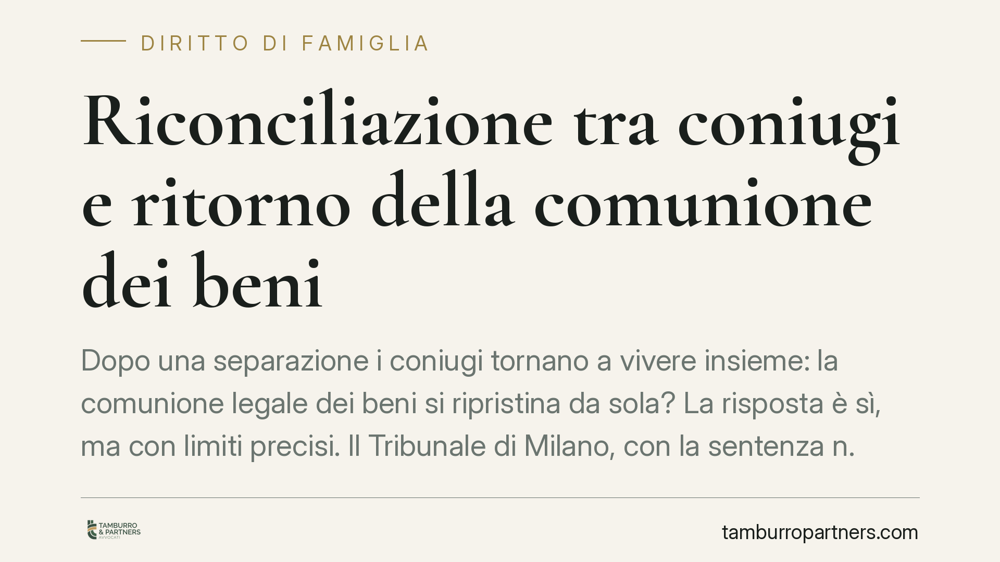

Riconciliazione tra coniugi e ritorno della comunione dei beni
Dopo una separazione i coniugi tornano a vivere insieme: la comunione legale dei beni si ripristina da sola? La risposta è sì, ma con limiti precisi. Il Tribunale di Milano, con la sentenza n. 910/2026, ha ribadito che il ripristino non opera in modo retroattivo e presuppone la prova piena della ricostituzione della comunione materiale e spirituale di vita.

Il fatto e perché conta
La separazione personale dei coniugi non scioglie il matrimonio, ma incide sul regime patrimoniale. Con la separazione, infatti, la comunione legale dei beni si scioglie (art. 191 c.c.): da quel momento ciò che ciascun coniuge acquista resta suo.
La domanda pratica è frequente: se i coniugi tornano insieme, la comunione legale rivive automaticamente? E, se sì, da quando?
Inquadramento normativo
La riconciliazione è disciplinata dall'art. 157 del Codice civile. La norma prevede che i coniugi possano far cessare gli effetti della separazione con una dichiarazione espressa o con un comportamento concludente, cioè con fatti incompatibili con lo stato di separazione. In pratica: la ripresa stabile della convivenza e della vita coniugale.
La riconciliazione fa venire meno gli effetti della separazione, compreso lo scioglimento della comunione legale. Di conseguenza, il regime patrimoniale che i coniugi avevano prima — se era quello di comunione legale (art. 177 c.c.) — torna a operare.
Attenzione però a due aspetti. Primo: il ripristino non ha effetto retroattivo. I beni acquistati durante il periodo di separazione restano personali di chi li ha acquistati; non "rientrano" nella comunione. Secondo: se i coniugi vogliono modificare il regime patrimoniale, devono farlo con convenzione per atto pubblico, ai sensi dell'art. 162 c.c.
Cosa ha chiarito il Tribunale di Milano
Con la sentenza n. 910/2026, la Sezione IV del Tribunale di Milano ha confermato l'orientamento consolidato: la riconciliazione richiede la prova piena della ricostituzione della comunione di vita, materiale e affettiva, tra i coniugi. Non basta una convivenza occasionale, né la frequentazione per ragioni pratiche (ad esempio la gestione dei figli o della casa).
Serve un dato oggettivo e stabile: la ripresa effettiva del rapporto coniugale nella sua pienezza. L'onere di provare la riconciliazione — e dunque il momento da cui la comunione è tornata a operare — grava su chi la invoca.
Implicazioni pratiche
Per i coniugi che tornano insieme, le conseguenze sono concrete.
I beni acquistati durante la separazione restano di proprietà esclusiva. Se Tizio ha comprato un immobile mentre era separato, quell'immobile non diventa comune solo perché la coppia si è riconciliata.
Dal momento della riconciliazione, invece, i nuovi acquisti tornano a cadere in comunione legale, salvo le eccezioni di legge (beni personali ex art. 179 c.c.).
Il punto critico è la data. In caso di contestazioni — tra coniugi, con creditori, o in una successiva causa — stabilire quando è avvenuta la riconciliazione può diventare decisivo. Una convivenza ambigua o intermittente apre spazio a incertezze patrimoniali rilevanti.
Per i terzi, in particolare i creditori, vale un principio di tutela: la riconciliazione non può pregiudicare i diritti acquisiti da terzi in buona fede prima dell'annotazione della riconciliazione stessa.
Cosa fare in concreto
- Formalizzate la riconciliazione. Se tornate a vivere insieme in modo stabile, rendete l'intenzione espressa e documentabile, evitando situazioni ambigue sul momento iniziale.
- Annotate la riconciliazione a margine dell'atto di matrimonio, così da rendere la nuova situazione opponibile ai terzi e certa nella data.
- Fate l'inventario dei beni acquistati durante la separazione: resteranno personali, ma è utile avere chiarezza su titolarità e provenienza delle somme impiegate.
- Valutate una convenzione patrimoniale per atto pubblico (art. 162 c.c.) se desiderate un regime diverso dalla comunione legale, ad esempio la separazione dei beni.
- Consultate un professionista prima di nuovi acquisti rilevanti, per sapere con certezza se cadranno in comunione o resteranno personali.
La riconciliazione è un atto che incide tanto sul piano affettivo quanto su quello patrimoniale. Gestirla con consapevolezza evita che una scelta di vita positiva si trasformi in una fonte di contenzioso futuro.
---
*Contributo informativo a cura di Tamburro & Partners - Avv. Giuseppe Tamburro. Non costituisce parere legale.*
Ogni famiglia ha il suo equilibrio.
Separazione, divorzio, affidamento, assegno: se vuoi un confronto riservato su una specifica situazione, scrivi allo studio. Ti rispondiamo entro un giorno lavorativo.